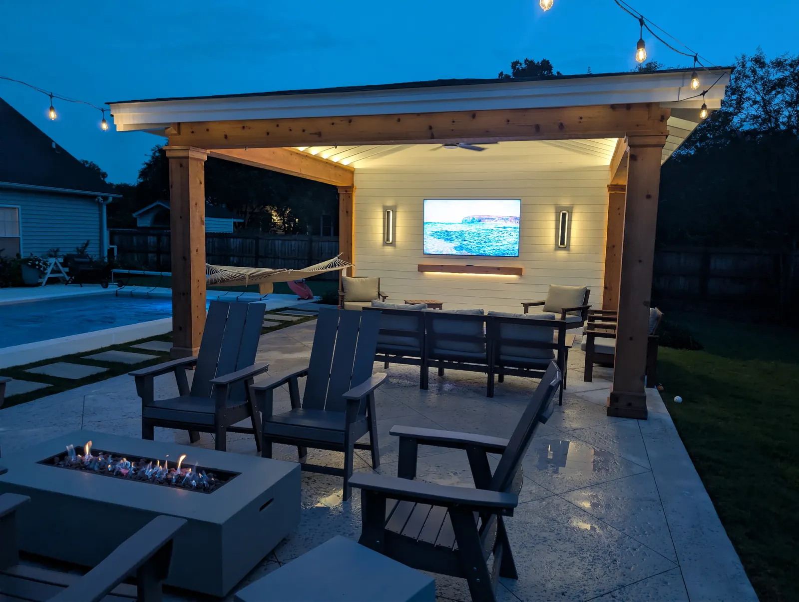

Backyard Design Ideas for Charleston, by What You Want It to Do

Start With What the Yard Has to Do
Ideas are easy. The useful question is what you want the backyard to do — host, relax, take the weather, handle the dogs, or simply stop being a swamp. Here is what we build for each, and what it costs.

If You Want to Host
Hosting needs three things: cover, somewhere to cook that does not isolate the cook, and light that works after dark. That combination is why a covered structure with a kitchen under it is the most requested project we do.
On our West Ashley cabana the brief was parties and football. What made it work was not the size, it was the finish: cedar posts and beams with craftsman trim, tape lighting hidden above the beams to wash the ceiling, wall sconces and bistro lights, and a fire table off the edge of the patio for when the crowd thins out.
Budget: pergola $10,000–$30,000, pavilion $30,000–$90,000+, kitchen $8,000–$20,000+, lighting about $200 a light plus a transformer.

If You Want Somewhere to Sit in the Evening
The cheapest thing that changes how much a yard gets used is a fire pit on a patio you can put chairs on. In Charleston it buys you October through April outdoors.
A client on Edisto had been digging on her lot and kept turning up old brick and pebbles. We built her fire pit from them — soldier course, running bond, a band of her pebbles, running bond again, travertine cap. You cannot order that from a catalog.
Budget: patio from $18 per sq ft, fire pit $1,000 for a kit or from $2,500 custom. Leave 6 feet of clear space around the pit for chairs and a walkway.
If the Yard Has a Problem First
Some backyards are not a design question yet. If water stands three days after rain, or the grade runs toward the house, that gets solved before anything else — because it is what nobody can fix once there is a patio on top of it.
The fix is either reshaping the ground or a drainage system: French drains, catch basins, piping off the gutters, channel drains. Which one depends on the yard, and cost depends on the problem, so we quote it after walking the property. It is also the work that protects everything you spend afterwards.

If the Lawn Keeps Failing
Deep shade under live oaks, a dog run worn to dirt, a tight courtyard, poolside — these are the places grass loses. Artificial turf is the honest answer there, and a bad idea where grass would be perfectly happy.
Budget: turf from $13 per sq ft including base prep; sod $750 a pallet installed, not counting dig-out or regrading.
If you have dogs, use the antimicrobial sand infill rather than plain sand. It is the difference between turf you are happy with in year three and turf you are not.
If You Want the Front of the House to Look Right
Curb appeal is mostly three decisions: what the walk is made of, how the grade is handled, and whether the planting suits the house.
On a Charleston front yard we did all three together — stucco retaining walls with a brick cap and brick treads to take up the grade, a bluestone walkway with a brick border tying the steps to the drive, layered planting along the walls, and artificial turf where grass would not hold.
Budget: front yard planting $5,000–$10,000; walls and steps quoted by face area, with height and material moving the number most.
Three Ideas That Cost Little and Get Noticed
- Uplight one tree. A single well-lit live oak does more for a property after dark than another round of planting, and it is visible from the street, the porch and inside the house.
- Re-edge and re-mulch the beds. A crisp edge and fresh mulch at $105 a yard is the cheapest way to make a yard look maintained.
- Add a fountain. A simple kit starts around $1,000 and gives a small courtyard the one thing a photo cannot sell you: sound.
Planning something bigger? Start with how we run a design, or see landscape design and installation.
Frequently Asked Questions
What should I do first in a backyard project?
If the yard holds water or slopes toward the house, fix that first. Otherwise start with the patio and any structure, because those set the layout, and run conduit, gas and water sleeves at the same time.
What does a backyard project cost in Charleston?
Patios start around $18 per square foot, fire pits from $1,000 for a kit or $2,500 custom, pergolas $10,000 to $30,000, pavilions $30,000 or more, and outdoor kitchens $8,000 to $20,000 or more.
Is artificial turf worth it in a backyard?
In the places grass keeps failing, yes: deep shade, dog runs, tight courtyards and poolside. It is from $13 per square foot including base preparation, and pets want the antimicrobial sand infill.
How much space does a fire pit need?
Leave a minimum of 6 feet of clear space around the pit for chairs and a walkway behind them. Most of our pits are 36 to 48 inches across and 16 to 18 inches tall.
Can a backyard be done in stages?
Yes, and we would rather phase a project than compromise it. The order that works is patio and structure, then kitchen, then planting and lighting, with conduit and gas run at the first stage.
Planning a Project of Your Own?
See everything we design and build, or get in touch to talk through your ideas with Doug and Zach.